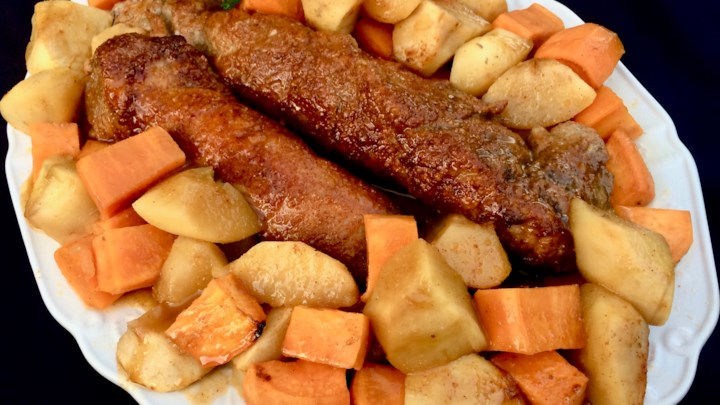

Spicy Pork Tenderloin with Apples and Sweet Potatoes
Jazz up your pork tenderloin with this spicy-sweet combo of apples, cider, sweet potatoes, and as much or as little heat as your palate requires! This easy oven dish only needs one other pot to reduce the sauce on top of the stove. It is large enough for a crowd or for leftovers later in the week. Add a green veggie or a salad, and some crusty dinner bread, and you are good to go!
Time: 1h 25m, 12 Servings
- cooking spray
- 1 tablespoon ground ginger
- 1 tablespoon light brown sugar
- 1 teaspoon chipotle chili powder, or to taste
- salt and ground black pepper to taste
- 2 (1 1/2 pound) pork tenderloins
- 4 apples, peeled and cut into 8 pieces each
- 1 large sweet potato, peeled and cut into 1 1/2-inch pieces
- 4 tablespoons butter, cut into small pieces
- 1 1/2 cups apple cider
- 1 lime, juiced
- 1/2 teaspoon granulated garlic
- 1/2 teaspoon ground ginger
- 1/8 teaspoon chipotle chile powder
- 1/8 teaspoon garam masala
- aluminum foil
- Preheat the oven to 425 degrees F (220 degrees C). Spray a 9x13-inch baking dish with cooking spray.
- Mix together 1 tablespoon ginger, brown sugar, 1 teaspoon chili powder, salt, and pepper in a bowl to create a rub. Rub combined seasonings on all sides of the pork tenderloins, using the entire amount.
- Place apples and sweet potatoes in the bottom of the prepared pan; dot with butter.
- Mix together apple cider, lime juice, garlic, 1/2 teaspoon ginger, 1/8 teaspoon chili powder, garam masala, salt, and pepper in a bowl. Pour over apples and sweet potatoes and place tenderloins on top.
- Bake in the preheated oven for 20 minutes. Ladle cooking liquid over apples and sweet potatoes, turn tenderloins over, and continue baking until pork is slightly pink at the center, about 20 minutes longer. A meat thermometer placed in the center of the thickest tenderloin should read 145 degrees F (63 degrees C).
- Remove apples and sweet potatoes to a serving platter using a slotted spoon. Place tenderloins on top and cover with aluminum foil.
- Pour cooking liquid from the baking dish into a 1-quart saucepan. Heat over medium-high heat until liquid comes to a boil. Boil, stirring occasionally, until the mixture is reduced by one half, 10 to 15 minutes.
- Drizzle sauce over pork, apples, and sweet potatoes. Slice tenderloins and serve.